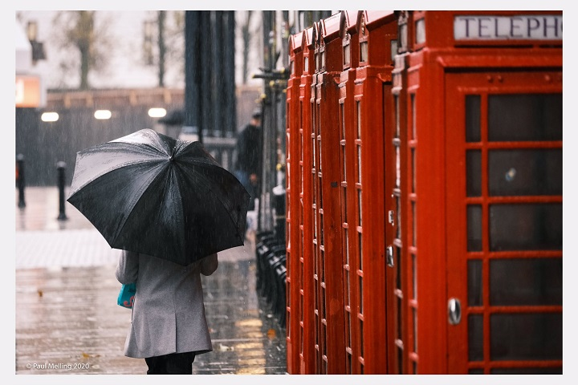

The Met Office has updated its warning of strong winds and heavy rain to lash Preston and Lancashire
from Sunday lunchtime onwards.
Remnants of Storm Aiden will continue the period of unsettled weather the city has seen throughout
half-term week.
Persistent heavy rain is expected under the yellow weather warning, which runs from 12noon on Sunday
(1 November) until 8am on Monday (2 November).
The Met Office say there is a risk of ‘further flooding’ for the North West during that time period.
Homes and businesses could be flooded and strong winds may cause damage to some buildings.